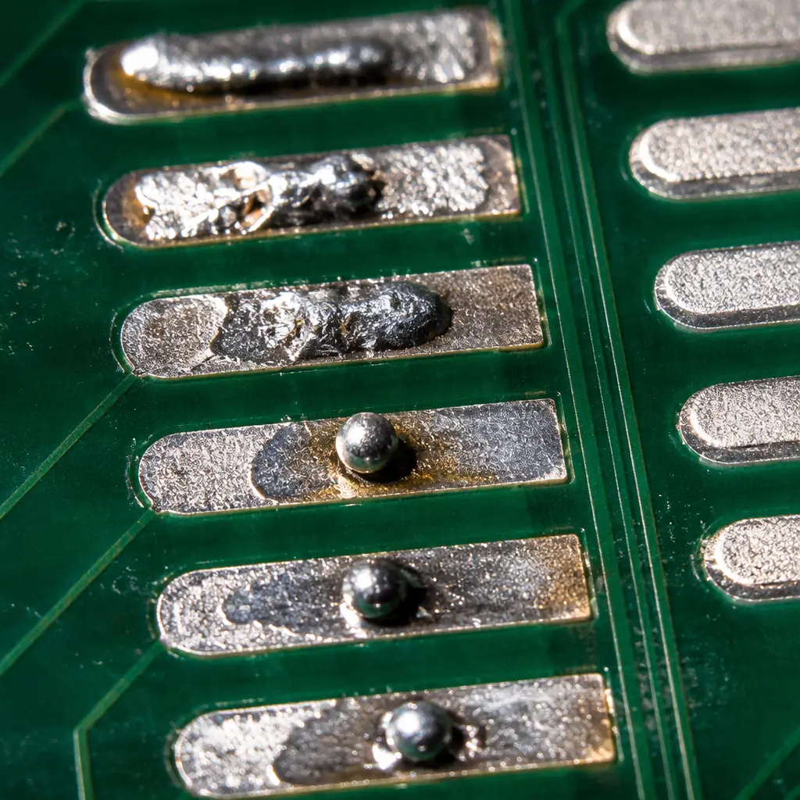
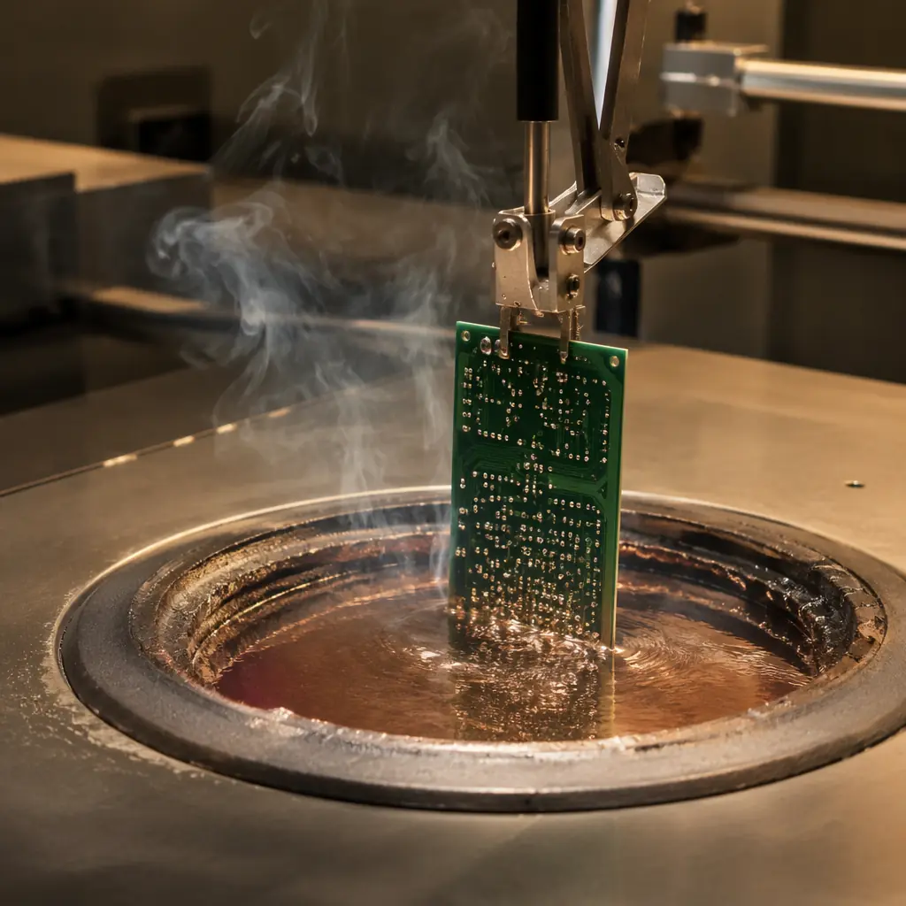
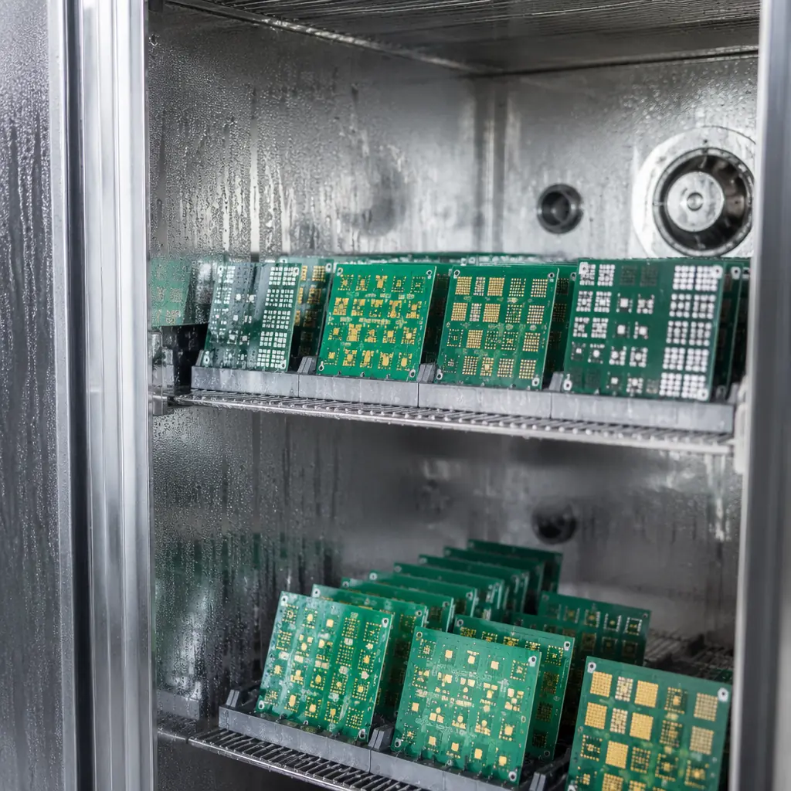
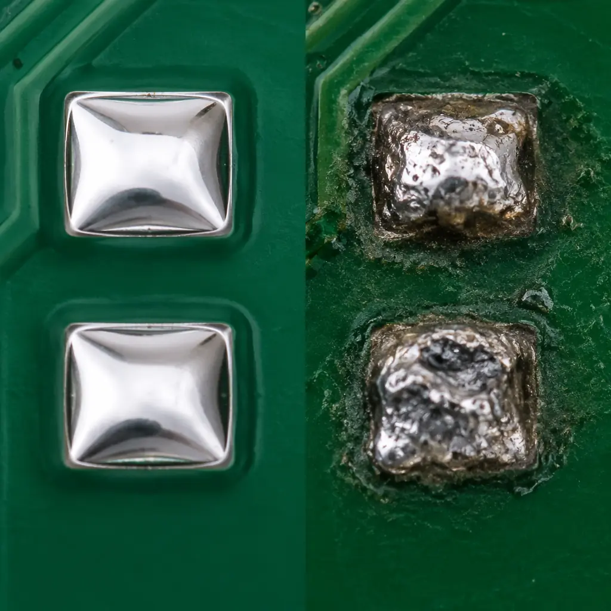

Every PCB assembly line has seen it: a component that looks fine under the microscope, passes incoming visual inspection, but refuses to wet during reflow. The solder balls up, the joint opens, and suddenly you're chasing a 15% first-pass yield drop with no obvious root cause. That's solderability failure — and it's almost entirely preventable with the right incoming testing protocol.
At Huaxing PCBA, our 8 SMT lines process boards from 2 to 32 layers across automotive, medical, industrial, and telecom sectors — and solderability-related defects consistently rank among the top three causes of assembly rework when incoming inspection is skipped. This guide covers the three methods that IPC standards define for verifying solderability before a single component hits the placement machine: J-STD-002 for component terminals, J-STD-003 for PCB pads, and wetting balance analysis for when you need quantitative pass/fail data instead of subjective visual judgment.

Why Solderability Testing Matters — The Cost of Skipping It
Solderability is the ability of a metallic surface to be wetted by molten solder. It degrades over time as terminal finishes oxidize, intermetallic compounds grow, and contaminants accumulate. The failure mode is deceptively simple: a surface that should accept solder instead repels it. The consequences are not.
Assembly-Level Failures Cascade Quickly
A single component with poor solderability on an 8,000-placement board can generate multiple open joints. On a high-mix line running 50 boards per batch, that's hundreds of rework touch-ups — each introducing thermal stress to adjacent components and risking pad lifting. Our PCB testing methods guide covers the full inspection chain downstream of assembly, but none of those tests can compensate for a solderability problem at the source.
Field Failures Are 10× More Expensive Than In-Line Rework
A marginal solder joint that passes ICT and functional test can still fail after thermal cycling in the field — especially in automotive under-hood environments ( –40°C to +125°C ) or industrial control panels with vibration exposure. Industry data from IPC shows that the cost multiplier for field failures vs. in-factory detection ranges from 10× for accessible consumer devices to over 100× for safety-critical automotive ECUs once recall logistics are factored in.
Storage Conditions Accelerate Degradation
Components stored in non-climate-controlled warehouses in humid coastal regions — common across Shenzhen's electronics supply chain — can lose solderability in as little as 6 months even with sealed packaging. ENIG-finished PCBs stored beyond their 12-month shelf life develop nickel oxide layers that standard flux chemistries cannot penetrate. This is why incoming quality inspection protocols that include solderability testing are not optional — they're the only gate between degraded inventory and your production line.
Procurement Reality: The cost of solderability testing is approximately $50–150 per lot — roughly the cost of reworking two BGA packages. For an annual production volume of 10,000 boards, skipping incoming solderability testing to save $1,500/year is gambling with a rework and field-return exposure that routinely exceeds $50,000.
J-STD-002 — Component Terminal Solderability Testing
J-STD-002 is the industry-standard test method for evaluating the solderability of component terminations — leads, terminations, solder balls, and castellations on SMD and through-hole parts. It's a "dip and look" test: immerse the component terminal in molten solder, then visually inspect for wetting coverage. The standard is jointly published by IPC and EIA, and it's referenced by virtually every major OEM procurement specification.

Test Categories and Steam Aging Requirements
J-STD-002 defines four test categories based on the intended assembly process and reliability requirements. The key differentiator is steam aging duration — a controlled oxidation step that simulates the natural degradation components experience during storage.
| Category | Steam Aging | Assembly Process | Typical Application |
|---|---|---|---|
| Category 1 | None (as-received) | Reflow or wave solder | Just-in-time production, fresh inventory |
| Category 2 | 8 hours ±15 min | Reflow or wave solder | Standard production — most common spec |
| Category 3 | 8 hours ±15 min | Wave solder only (more aggressive flux) | Through-hole components, lower activation flux |
| Category 4 | 16 hours ±15 min | Reflow or wave solder | High-reliability: automotive, medical, aerospace |
Steam aging is performed at 93°C ± 3°C with deionized water. After aging, components are dried and tested within 72 hours. The 16-hour Category 4 aging is roughly equivalent to 12–18 months of ambient storage in an uncontrolled environment — which is exactly the scenario many procurement teams face when components sit in inventory between purchase order placement and actual PCBA production.
Acceptance Criteria: What "Good" Looks Like
After immersion (typically 4–5 seconds at 245°C ± 5°C for SnPb or 255°C for lead-free SAC305), the component is inspected under 10× magnification. The pass/fail standard is unambiguous:
Pass: ≥ 95% of the immersed surface area shows clean, continuous solder coating
The solder must form a smooth, uniform film with a contact angle below 90°. The meniscus should be concave, indicating good wetting. Small pinholes or voids occupying less than 5% of the total area are acceptable, provided they don't concentrate at a single connection point.
Fail: Non-wetting, dewetting, or < 95% coverage
Non-wetting appears as bare base metal with solder balled up nearby — the surface simply refuses to accept solder. Dewetting shows irregular patches where solder initially coated the surface then retreated, leaving a thin film with thick solder ridges at the edges. Both are rejection criteria regardless of coverage percentage. For SMD components with multiple terminations, every single termination must individually meet the 95% threshold.
Key Insight: J-STD-002 is a qualitative test — it tells you pass or fail, but not how close to the edge a passing part is. For mission-critical applications where you need numerical margin data, wetting balance testing (covered below) provides quantitative force measurements that let you track solderability degradation trends over time.
J-STD-003 — Board-Level Solderability Testing
J-STD-003 addresses solderability from the board side — specifically the pads, lands, and plated through-holes on bare PCBs. While J-STD-002 tests whether your components will solder, J-STD-003 tests whether your boards are ready to receive them. Both are necessary; neither is sufficient alone.

Why PCB Solderability Degrades Over Time
PCB surface finishes are chemically active by design. The entire purpose of ENIG, immersion silver, and OSP is to present a clean, oxidation-free surface for soldering. But that surface is thermodynamically unstable — it wants to react with oxygen, sulfur, and moisture in the air. The degradation timeline depends heavily on the finish chemistry:
| Surface Finish | Typical Shelf Life (Sealed) | Degradation Mechanism | Field Failure Mode |
|---|---|---|---|
| ENIG (Electroless Nickel Immersion Gold) | 12 months | Nickel oxidation through gold pores, NiO layer formation | Black pad syndrome, brittle intermetallic |
| Immersion Silver | 6–9 months | Silver sulfide tarnish from airborne sulfur | Non-wetting, high contact resistance |
| OSP (Organic Solderability Preservative) | 6 months (1 reflow) | OSP film degradation, copper oxidation | Dewetting on second-side reflow, poor hole fill |
| Immersion Tin | 6 months | Tin whisker growth, Cu-Sn IMC thickening | Shorts (whiskers), non-wetting at thin-tin areas |
| HASL (Lead-Free) | 12+ months | Surface oxidation, planarization issues | Uneven wetting on fine-pitch pads |
Our ENIG vs HASL comparison guide and PCB surface finish selection guide cover the trade-offs in detail. The critical point for J-STD-003 is that every finish degrades — the question is how fast and whether your incoming inspection catches it.
J-STD-003 Test Method and Acceptance Criteria
Like J-STD-002, the board-level standard uses a dip-and-look methodology with steam aging as a preconditioning step. Test coupons or actual production boards are dipped into molten solder using a dip-and-look or solder float method:
Edge Dip Method (Most Common for Production QC)
A test coupon with representative pads is dipped vertically into a solder pot at 255°C (lead-free) to a depth of 2–5mm for 4–5 seconds. After cooling, the dipped edge is inspected under 10× magnification. This is the fastest method and is suitable for routine lot acceptance testing.
Solder Float Method (For Through-Hole PTH Integrity)
The board floats on a molten solder bath at 260°C for 10 seconds, testing both pad solderability and plated through-hole integrity. This method also serves as a thermal stress test — delamination or barrel cracking during float is an automatic rejection.
Acceptance: Clean Wetting with Full Pad Coverage
Per J-STD-003, the solder must cover the entire pad surface with a smooth, bright coating. Any evidence of non-wetting or dewetting on pads designated as solderable is a failure. The standard also specifies that plated through-holes must show solder rise through the barrel — a critical check that many labs skip.
Procurement Tip: If you're sourcing PCBs from a supplier that stores bare boards for more than 3 months before assembly, specifically request J-STD-003 Category 3 testing (8-hour steam aging) on each incoming lot. Boards with OSP finish should be tested per-lot regardless of storage duration — OSP degradation is faster and less predictable than metallic finishes.
Wetting Balance Testing — The Quantitative Alternative
While dip-and-look tests are simple and widely used, they have an inherent limitation: they're subjective. Two inspectors can look at the same 95%-coverage pad and disagree on pass/fail. When you need objective, repeatable data — for process capability studies, supplier qualification, or high-reliability traceability — wetting balance testing provides numerical force measurements that remove human judgment from the equation.
How Wetting Balance Works
A wetting balance measures the vertical force exerted on a specimen as it's immersed into and withdrawn from a molten solder bath. The instrument records force (in millinewtons) against time, producing a characteristic curve:
Initial Buoyancy Phase (t₀ to t₁)
As the specimen enters the solder, buoyancy pushes it upward — the force reading goes positive. This phase typically lasts less than 0.2 seconds for clean surfaces and verifies that the instrument is calibrated correctly.
Wetting Transition (t₁ to t₂)
The solder begins to wet the specimen surface. The upward buoyancy force transitions to a downward wetting force as the molten solder pulls on the specimen through surface tension. The slope and smoothness of this transition are direct indicators of wetting speed. A fast, smooth transition = excellent solderability; a slow, erratic transition = marginal.
Equilibrium Wetting Force (t₂ onward)
The wetting force stabilizes at its maximum value, representing the full wetting of the immersed surface. The key measurement is Fmax — maximum wetting force at equilibrium. Higher Fmax = better wetting. The time to reach 2/3 of Fmax (T2/3) is the most commonly reported metric for wetting speed.
What Good vs. Bad Wetting Balance Curves Look Like
| Parameter | Excellent Solderability | Marginal (Investigate) | Fail (Reject) |
|---|---|---|---|
| Fmax (relative to theoretical) | > 90% | 70–90% | < 70% |
| T2/3 (wetting speed) | < 1.0 second | 1.0–2.0 seconds | > 2.0 seconds |
| Curve shape | Smooth, monotonic, no inflections | Minor irregularities, hesitations | Erratic, multiple zero-crossings, no clear equilibrium |
| Reproducibility (σ on 5 samples) | < 5% of Fmax | 5–15% of Fmax | > 15% of Fmax |
When to Require Wetting Balance Instead of Dip & Look: (1) Supplier qualification — you need numerical baseline data to compare vendors objectively. (2) Process capability studies (Cpk) — you can't calculate statistical process control limits from pass/fail visual data. (3) Root cause analysis — when a lot fails dip-and-look, wetting balance tells you whether the problem is wetting force, wetting speed, or both. (4) High-reliability traceability — automotive customers increasingly require wetting balance data in PPAP documentation as evidence of process control.
How to Include Solderability Requirements in Your PCB Purchase Order
Writing solderability testing into your procurement specification is the single highest-leverage action you can take to reduce assembly defects. A well-written solderability clause on a purchase order doesn't just communicate expectations — it creates legal and commercial accountability for your supplier to perform the testing. Here's what to specify:

| Requirement Element | Recommended Specification | Why It Matters |
|---|---|---|
| Test Standard (Components) | J-STD-002, Category 2 minimum; Category 4 for automotive/medical | Ensures steam aging is performed; "as-received" testing is nearly worthless |
| Test Standard (PCBs) | J-STD-003, edge dip method, per-lot testing | Catches batch-to-batch finish variations; per-lot is non-negotiable for OSP |
| Inspection Frequency | 100% of incoming lots; sample size per ANSI/ASQ Z1.4, AQL 0.65 Level II | AQL 0.65 is tight enough to catch infrequent defects; Level II provides adequate sample sizes for production lots |
| Acceptance Criteria | ≥ 95% wetting coverage, no non-wetting or dewetting on any termination or pad | Removes ambiguity — zero tolerance for non-wetting regardless of coverage elsewhere |
| Wetting Balance (if required) | Fmax ≥ 90% theoretical, T2/3 ≤ 1.0s, report per lot | Adds $200–400/lot but provides numerical traceability for PPAP |
| Documentation | Test report with lot number, date, steam aging duration, results per sample, inspector sign-off | Creates audit trail; critical for supplier audits |
Questions to Ask Your PCB Supplier About Solderability
Before placing an order, verify that your supplier has the capability and the process discipline to perform these tests. The answers to these questions reveal more about quality culture than any certificate on the wall:
"Do you have an in-house solderability lab, or do you outsource?"
In-house capability means faster turnaround and tighter integration with production. Outsourced testing adds 2–5 days and creates a gap between test results and lot release. At Huaxing PCBA, our in-house lab performs J-STD-002/003 testing as part of our IQC (Incoming Quality Control) process, with results linked directly to lot traceability in our MES system.
"What steam aging equipment do you use, and how do you verify chamber uniformity?"
A steam aging chamber with temperature gradients can produce false passes — one coupon ages properly while another in a cooler zone doesn't. The chamber should have multiple thermocouples and temperature uniformity within ±1°C across all coupon positions. This level of detail is exactly what a comprehensive supplier audit should verify on-site.
"What is your disposition process for a failed lot — do you notify the customer before rework or scrap?"
This is the acid test of quality transparency. A supplier who retests in-house without notifying you is hiding failure data. The correct process: fail notification within 24 hours → root cause analysis → corrective action plan → customer approval before lot disposition. This is especially critical for boards covered by IPC Class 3 requirements, where traceability to the lot level is mandatory.
"Can you provide wetting balance data if our end customer requires it for PPAP?"
Not every project needs wetting balance, but the supplier should have access to the equipment — either in-house or through an accredited partner lab. If the answer is "we don't offer that," it's a signal that the supplier's quality infrastructure may not support the documentation demands of automotive or medical OEMs.
The Bottom Line: Solderability Testing Pays for Itself
Solderability testing sits at an uncomfortable intersection in PCB procurement: it's not legally required (unlike UL or RoHS), it adds upfront cost and lead time, and its value is invisible when it works — because nothing went wrong. But the data is clear: the cost of one recall, one field-return investigation, or even one production line stoppage exceeds years of solderability testing budgets. For any project shipping to an OEM that cares about reliability — and increasingly, that's every OEM — J-STD-002, J-STD-003, and wetting balance testing are not optional line items. They're the cheapest insurance policy in electronics manufacturing.
At Huaxing PCBA, solderability testing is integrated into our standard IQC workflow for every incoming component lot and PCB batch. Our in-house lab runs J-STD-002/003 with programmable steam aging chambers, and we provide wetting balance data on request for PPAP packages. Coupled with full-spectrum electrical and AOI testing and pre-shipment inspection, our quality chain is designed to catch solderability issues before they reach the placement machine — not after. Contact our engineering team to discuss solderability requirements for your next project, or read our supplier audit guide to learn how to evaluate any PCB manufacturer's quality infrastructure.